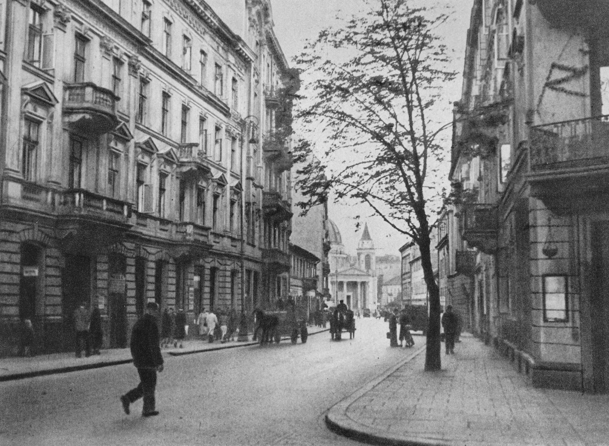

Ten sam róg od 1987
Giulia przyjechała z Mediolanu z jednym przepisem na ragù i jednym ekspresem. Lokal przy Mokotowskiej zmienił meble dwa razy, piec raz, a przepis ani razu.
1987pierwsze espresso
2004nowy piec
48 hdojrzewa ciasto